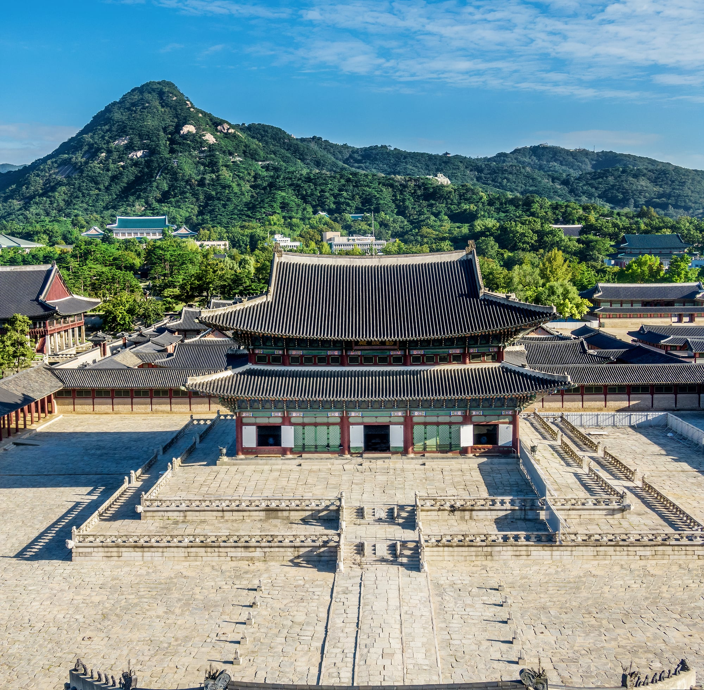
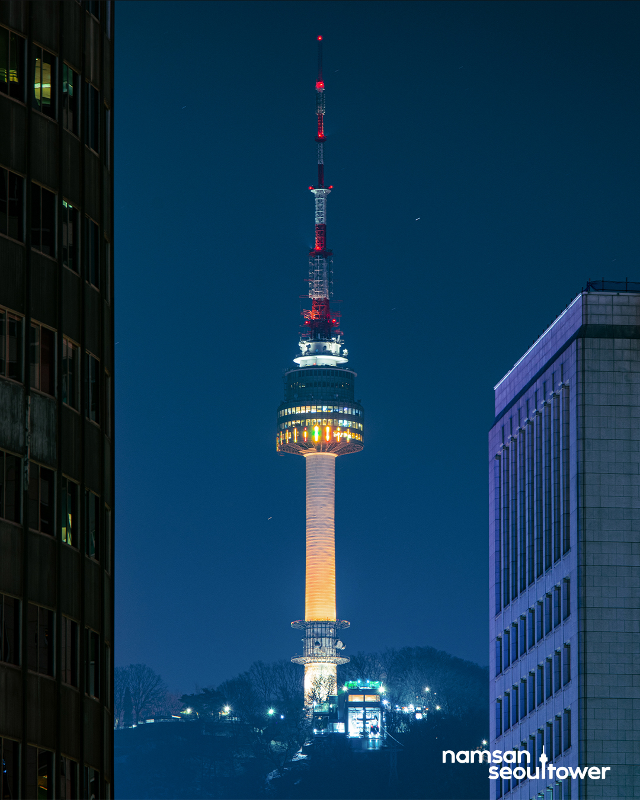
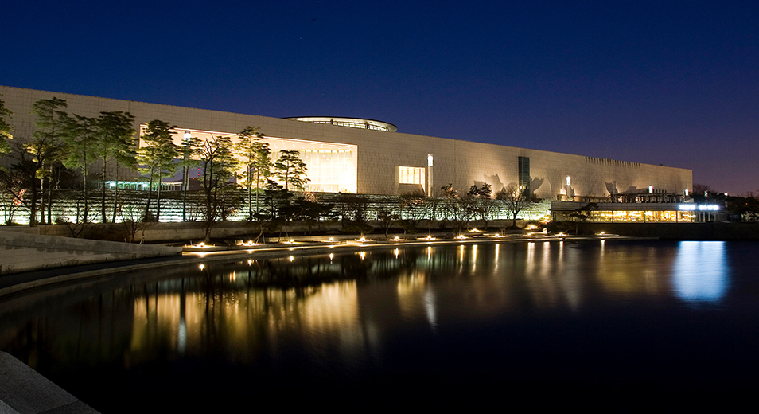

Travel
Gyeongbokgung Palace 경복궁
Gyeongbokgung was the main royal palace of the Joseon dynasty. Built in 1395, it is located in northern Seoul, South Korea. The largest of the Five Grand Palaces built by the Joseon dynasty, Gyeongbokgung served as the home of the royal family and the seat of government
(Wikipedia).
Address: 161, Sajik-ro, Jongno-gu, Seoul


N Seoul Tower N 서울타워
N Seoul Tower (also known as Namsan Seoul Tower, 남산서울타워) was built in 1969 as Korea's first integrated transmission tower beaming television and radio broadcasts across the capital. Since opening to the public in 1980, it has become a much-loved Seoul landmark
(VisitSeoul.net).
Address: 105, Namsangongwon-gil, Yongsan-gu, Seoul
The National Museum of Korea 국립중앙박물관
The museum includes everything from a simple hand axe of the Paleolithic Period and a magnificient golden crown of the Three Kingdoms Period to Goryeo Period celadons, or pottery, and paintings dating back to the Joseon Period, as well as pictures of modern-era Korea and a variety of other zones dedicated to different cultures throughout the globe
(VisitSeoul.neg).
Address: 137, Seobinggo-ro, Yongsan-gu, Seoul

For more sightgseeings in Seoul: VisitSeoul.net
Lodging
We recommend the following five hotels (View locations):
Hotel The Designers Cheongnyangni Website
Address: 226 Wangsan-ro, Dongdaemun-gu, Seoul
You may take a BUS 3216 or BUS 201 from the bus stop [Cheongnyangni Miju Shopping Area] to [Seoul BIOHUB] (or [Kyunghee Univ. Entrance], the next stop) (no transfer required).
Arirang Hill Hotel Dongdaemun Website
Address: 8 Arirang-ro, Seongbuk-gu, Seoul
You may take a BUS 273 from the bus stop [Samseon-dong Community Center] to [Seoul BIOHUB] (or [Kyunghee Univ. Entrance], the next stop) (no transfer required).
Hotel President Website
Address: 16 Eulji-ro, Jung-gu, Seoul
You may use Subway line 1 from City Hall station to Hoegi station then transfer to a BUS Dongdaemun 01 to the last stop of the bus (or additional 15 min walk).
Sotetsu Hotels Myeongdong Website
Address: 15 Namdaemun-ro 5-gil, Jung-gu, Seoul
You may need to take a BUS 201 from the bus stop [Lotte Young Plaza] to [Seoul BIOHUB] (or [Kyunghee Univ. Entrance], the next stop) (no transfer required).
ibis Styles Ambassador Seoul Myeongdong Website
Address: 302 Samil-daero, Jung-gu, Seoul
You may need to take a BUS 201 from the bus stop [Lotte Young Plaza] to [Seoul BIOHUB] (or [Kyunghee Univ. Entrance], the next stop) (no transfer required).
Useful links:
Subway maps
How to - Transportation